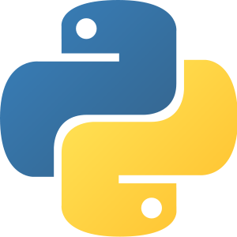
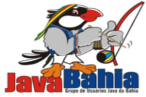

Patrocinadores


Apoiadores
Organização



Bem vindo ao maior evento de NoSQL da Bahia! Esse ano, em sua segunda edição online que será feita via Youtube/Facebook/Linkedin!
Palestras de altíssima qualidade em apresentações de até 50 minutos.
Continue lendo essa página para descobrir porque você não pode perder esse evento!
Inscrições até o dia do evento 14/05 1h antes para quem quiser participar do sorteio de brindes
Bem vindos ao NoSQLBA 2021
Nesta apresentação veremos um pouco das capacidades NoSQL do PostgreSQL por oferecer suporte nativo a JSON/JSONB, HStore (chave/valor), XML, oferecendo excelente indexação e otimização no armazenamento, e atendendo aos requisitos ACID, portanto tendo o melhor dos dois mundos. Sem contar o alto poder de extensibilidade que oferece pela possibilidade de escrever novos tipos de dados, mecanismos de indexação, linguagens procedurais, adaptadores de fontes de dados externas (SQL/MED), entre outras diversas características excelentes.
Modelar dados no banco NoSQL AWS DynamoDB nem sempre é uma tarefa fácil, principalmente para quem tem background com bancos de dados relacionais. Com esta palestra, vou demonstrar uma das maneiras de pensar a modelagem da sua aplicação para utilizar DynamoDB sem sofrimento. A palestra é baseada na live realizada pelo Normandes Junior, da Zup, (https://www.youtube.com/watch?v=kSnpuKr3Ajw&t=1s) que inclusive autorizou a divulgação. :)
Nessa talk falaremos um pouco de alguns cases com bancos NOSQL no Serpro.
A modelagem de dados é um dos fatores determinantes na performance do seu banco de dados. Nesta apresentação vamos falar sobre a diferença de modelar um banco de dados NoSQL vs. um banco de dados relacional, e para que ninguém tenha que reinventar a roda, vamos conversar sobre design patterns.
No concorrido mundo da tecnologia, melhorias de milissegundos em performance podem fazer toda a diferença para seus clientes. Dessa necessidade, surgiram diversos paradigmas e frameworks, exigindo paralelamente um bom e rápido desempenho na persistência da informação. Neste cenário nasceu o Apache Cassandra, o banco de dados NoSQL, elástico, tolerante a falhas e com um alto grau de performance. O Cassandra é um banco de dados não relacional originado pelo Facebook, e hoje é um projeto open source dentro da Apache Foundation com cases de sucessos nas maiores empresas do mundo, como o Netflix, GitHub, eBay, dentre outros. Nessa palestra será abordado os conceitos do Cassandra, dicas, ferramentas e desafios para se trabalhar com esse banco de dados.
Teradata é um sistema de gerenciamento de banco de dados relacional que é projetado para cargas massivas de dados com a capacidade de ter bancos de dados com centenas de terabytes de dados em tamanho. Esta característica torna o Teradata atrativo para grandes empresas que precisam de uma solução de alta escalabilidade para que seus sistemas permaneçam intactos; no entanto, o sistema Teradata pode também ser tão pequeno quanto 100 gigabytes. Vamos falar sobre arquitetura do Teradata e porque é uma solução importante no mercado
Venha conhecer os desafios de escalabilidade do Cartola FC. Conhecer o histórico de um produto de mais de 15 anos de história, e como que hoje conseguimos suportar 100K requests/segundo nos momentos de demanda mais intensa. Iremos falar sobre as tecnologias usadas no backend com bancos de dados relacionais e não relacionais para cache e busca, tecnologias de infraestrutura como Nginx e Tsuru, e como que construímos o frontend do web e mobile e seus desafios inerentes à nossa arquitetura.
Bem vindo ao NoSQLBA
Redis é um sistema usado como cache distribuído, suporta banco de dados em memória e em disco e ainda possui soluções pra mensageria. Nessa palestra será apresentado os principais recursos para o uso produtivo dessa ferramenta.
A definir
A definir
A definir
Como que a Apache Software Foundation pode colaborar com seu ambiente de dados
A definir
Os bancos de Dados NOSQL (not only SQL) foram criados, principalmente, para resolver problemas com aplicações web que precisam operar com gigantescas cargas de dados além de poder escalar com grande facilidade. Esses tipos de banco de dados vem sendo usados com muita frequência em redes sociais como Twitter, Facebook, além de persistência em aplicações nas nuvens. Outro ponto importante a citar é a crescente adoção destas novas tecnologias, inclusive em mercados mais conservadores, tais como instituições financeiras e agências governamentais, seus motivos são diversos normalmente para solucionar problemas com flexibilidade, escalabilidade, latência e performance. Para demonstrar, compartilhar essas tecnologias foi criado o evento NOSQL-BA.
Os bancos NoSQL está crescendo cada vez mais ao redor do mundo, diversas empresas vem utilizando essa tecnologia.
Compartilhe conhecimento e experiência no assunto, além de conhecer palestrantes com referência internacional.
O evento focado em NoSQL visando também a comunicação e a interação, com minicurso e palestras com profissionais com experiência na tecnologia com referência internacional.
O evento será focado em desenvolvedores, gestores, entusiastas que tenham interesse em falar de NoSQL.